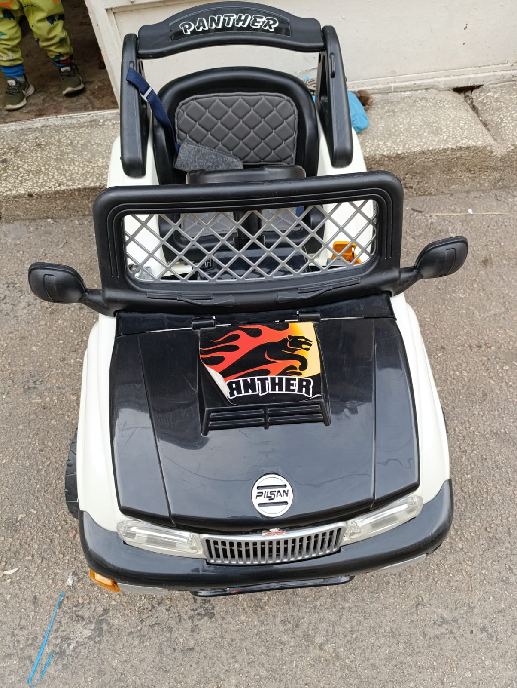

Galeriye Dön
Panther Off-Road Jeep


Teknik Özellikler
Vahşi Panther ruhunu yansıtan bu siyah beyaz Off-Road Jeep ile macera başlasın! Güçlü duruşu, dikkat çekici "Panther" ve alev grafikleri, kapitone koltuğu ve sağlam yapısıyla minik sürücüler için tasarlandı. Hem görüntüsü hem de özellikleriyle fark yaratır.
- Akü: 12 Volt (Yan etikette görüldüğü gibi)
- Motor: Tek veya Çift Motor (Modele göre değişir)
- Hız: Ortalama 3-6 km/s
- Koltuk: Tek Kişilik Kapitone Desenli Koltuk
- Uzaktan Kumanda: Büyük ihtimalle mevcut (Standart)
- Aydınlatma: Çalışan Ön Farlar ve Ön Panjur Işıkları
- Kapılar: Sabit (Açılmaz)
- Ses Sistemi: Korna, Motor Çalışma Sesi, Muhtemelen Dahili Müzikler
- Taşıma Kapasitesi: Maksimum 25-30 kg
- Uygun Yaş Aralığı: 3 - 6 Yaş (Tahmini)
- Emniyet Kemeri: Mevcut (Görseldeki gibi basit kemer)
- Malzeme: Sağlam Plastik Gövde
- Renk: Siyah ve Beyaz
- Grafikler: Kaput ve Yanlarda Panther/Alev Temalı Grafikler
- Ekstra: Kaput Üzeri Dekoratif Aletler, Ön Koruma Barı, Roll Bar
- Marka: Pilsan (Kaput üzerindeki logoya göre)
- Ürün Ölçüleri: (Gerekirse buraya ölçüleri ekleyin)